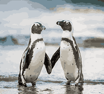
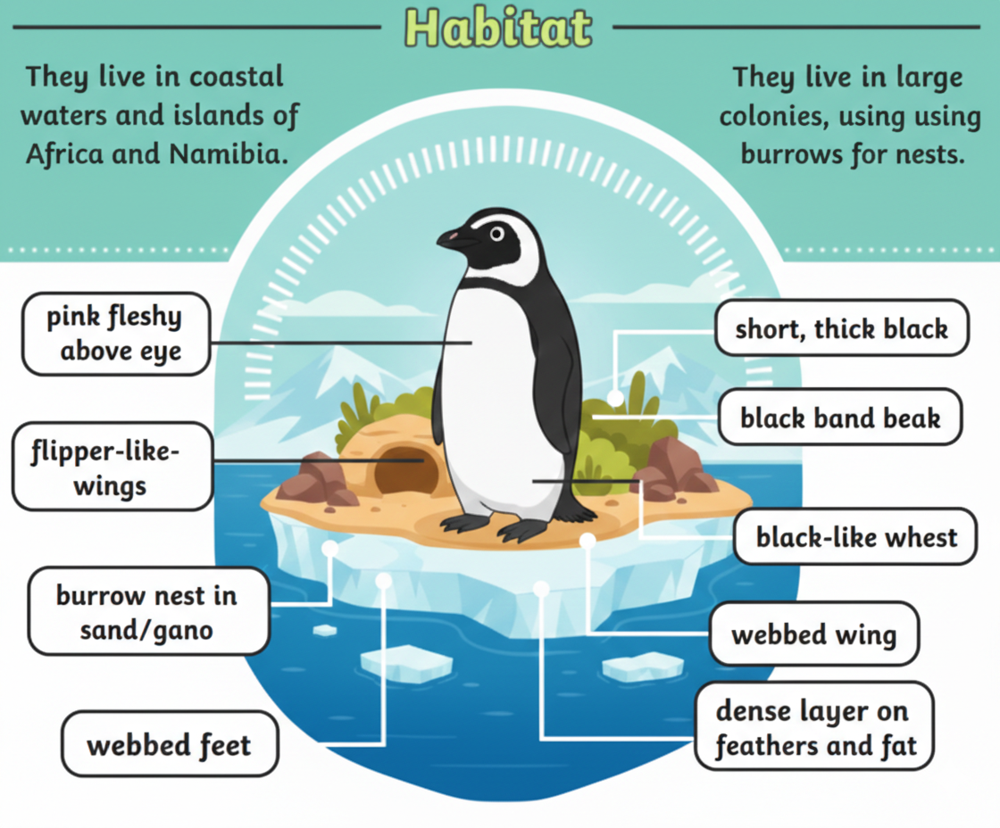
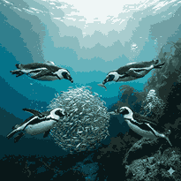

The Only Penguins Found in Africa

African penguins are also known as "jackass penguins" because of their loud, donkey-like braying sound. They are the only penguin species found on the African continent.

African penguins live along the southwestern coast of Africa, mainly in South Africa and Namibia. They prefer sandy beaches, rocky shores, and coastal islands.

Their diet mainly consists of small fish such as sardines and anchovies, as well as squid. They are excellent swimmers and can dive deep to catch prey.